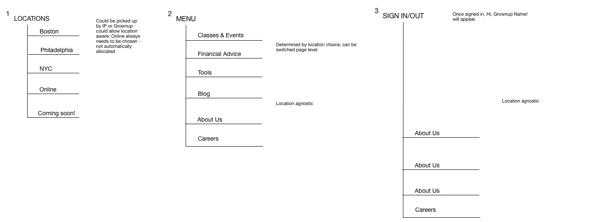

Crafting the User Journey
Learning to Scaffold an Experience
Thank you!
MeYouHealth offers a well-being program that helps people eat better, walk more, quit smoking, and make small but meaningful changes.
Let's get acquainted.
Tell us about yourself.
Now, here's the plan
- What is UX?
- What is a user journey?
- Let's do one together
- DIY!
- Show & Tell
- Q&A
What is UX?
Information architecture?
Just as buildings need scaffolding, experiences need scaffolding, too.
Information architecture?
Site structure

Information architecture?
Navigation
What is a user journey?
How a user gets from
point A (need/desire) to
point B (goal) within a product.
What is a user journey?
And making sure the journey is as delightful as possible.
In the wild
Real Life breakdown

DIY!
Rethink the experience of grocery shopping to make it more delightful.
Map out the current grocery store experience from store entry to product purchase to leaving the store.
- What are the pain points and user needs?
- How is technology being used?
- What are the opportunities for improvement?
Map out the delightful grocery store experience.
- What are the different decision points?
- How could technology help?
- How would the store need to change to make these improvements?